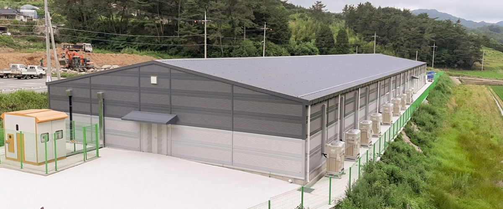
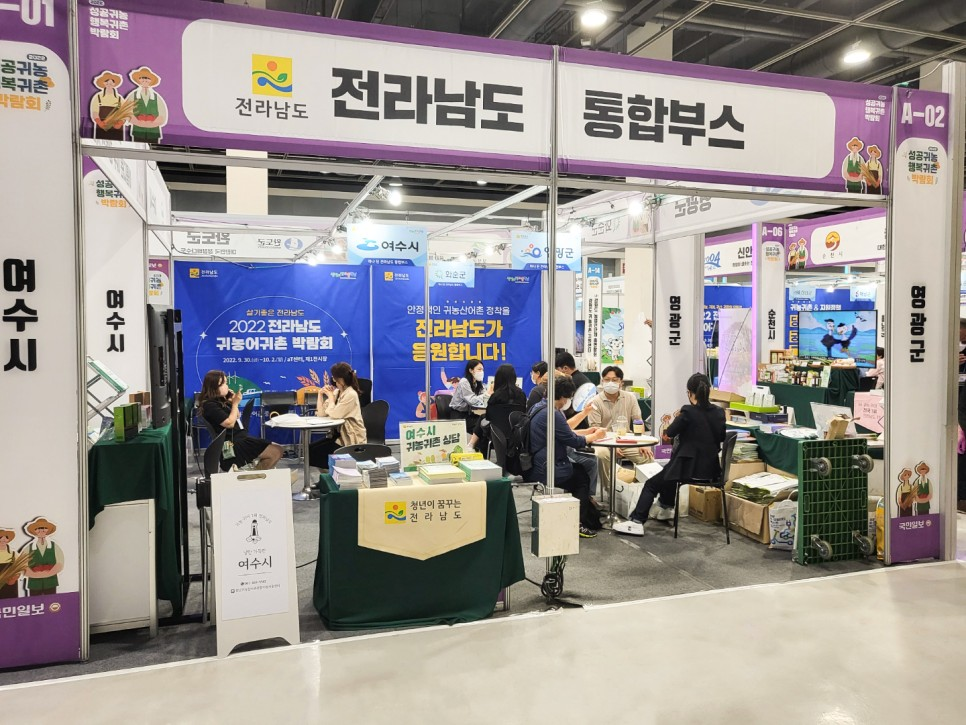

재배의 시작에서
농식품의 새로운 가능성까지
유리온실 개원, 유통망 확대, 연구·가공시설 구축과 제품 개발. 영글어농장이 걸어온 발자취를 소개합니다.


연도를 선택하면 해당 연도의 상세 이력을 펼쳐볼 수 있습니다.
2025 제품·브랜드와 유통 채널 확대
유기농 현미로 만든 머쉬라이스칩, 달콤한 포도즙 출시
엄마만점 과일칩 패키지 리뉴얼 (과일칩 캐릭터 런칭)
KBS 1TV '무엇이든 물어보세요' 협찬
버섯쌀, '박시은 진태현의 매일매일 건강관리 비결' 유튜브 PPL
설아복숭아칩 - 벨기에 국제식음료품평회 2스타 수상
동결건조 과일칩 - CJ푸드빌 ‘뚜레쥬르’ 입점
2024 보위강 제품군 출시
홍콩 AFL 참가
보위강 버섯쌀 출시
보위강 진액 출시
LG헬로비전 TV 홈쇼핑 버섯쌀 판매
2023 버섯·현미 제품 개발
청년전남 - 생명의땅으뜸전남 (제633호)
헤럴드경제 전남도, 5월 친환경 농산물에 '블루베리'
백년농가 "유기농현미&린테우스 상황버섯" 출시
OBS 경인 TV "안 아프고 오래사는 건강 비법서" 협찬
JTBC "한 번 더 리즈시절" PPL
2022 생산·가공 기반 확장
네이버 라이브 방송 오픈
현미상황버섯, 현미동충하초 판매개시
가공공장 증축
버섯 재배 시설 준공 (동충하초&상황버섯)
2021 연구 기반 구축과 수상
제26회 농업인의 날 대통령상 수상
기업부설 연구소 설립
2020 가공 사업 기반 마련
농업회사법인(주)영글어농장 가공공장 설립
SSG닷컴 무농약블루베리 & 애플수박 납품계약 · 농업회사법인(주) 모모팜 설립
2019 벤처기업 등록
SSG닷컴 새벽에 수확한 영글어딸기 납품계약 · 대표이사 김윤재 전남도지사 표창장 수상 · 2019 대한민국 사회공헌 대상 선정
영글어농장 벤처기업등록
2018 농장과 재배 품목 확대
농업회사법인(주)트리니티팜 흡수합병
칸달로프 멜론 생산 및 출하
2017 재배·출하와 유통망 확대
딸기 생산 및 출하
에브리데이리테일 전점 국산 냉동 블루베리 납품 계약체결
화순 노지 블루베리농장 개원 및 딸기(멜론) 비닐하우스 농장 개원
대표이사 김윤재 군정발전유공 표창패 수상
2016 이마트 국산의 힘 선정
이마트 블루베리품목"국산의 힘" 선정 및 판매개시
2014 제2 유리온실 개원
화순 제2 유리온실 농장 개원
이마트, 트레이더스, 에브리데이리테일 전 지점 블루베리 납품 및 광주신세계백화점 직거래 납품
2013 생산·유통 기반 확대
화순 노지 비가림하우스 농장 개원
농업회사법인(주)트리니티팜 법인 설립
이마트 142개 전 점 직거래 납품
2012 직거래 납품 확대
이마트 61개점 직거래 납품
2011 이마트 시범 직거래 시작
대표이사 김윤재 전라남도 신지식학사 농업인 선정 · 이마트 협력업체로 선정 (5개지점 시범 직거래 납품개시/ 무농약인증)
2008 농업회사법인 개업
농업회사법인 개업 및 제1 유리온실 개원(파프리카, 블루베리)